2013 · Maputo
Doze mesas e uma grelha a carvão.
A primeira casa abriu na Avenida Marginal com uma grelha, uma fritadeira e um menu que cabia num postal. O frango à Zambeziana estava lá desde o primeiro dia.
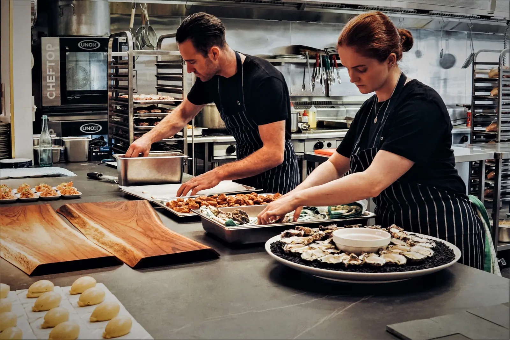
Uma grelha na Marginal em 2013. Doze casas em doze países hoje. O mesmo carvão, as mesmas mesas compridas.
2013 · Maputo
A primeira casa abriu na Avenida Marginal com uma grelha, uma fritadeira e um menu que cabia num postal. O frango à Zambeziana estava lá desde o primeiro dia.
2016 · Cidade do Cabo e Lisboa
Duas casas novas e uma regra que se mantém: cada chef passa um mês a cozinhar noutra casa antes de abrir a sua.
2019 · O bar e a garrafeira
Juntámos um bar de cocktails e uma garrafeira de 320 rótulos. O jantar passou a acabar à uma da manhã.
2022 · Online
A nossa app de pedidos chegou a Maputo e Joanesburgo. As entregas já são um terço dos pedidos de cada noite.
2026 · Doze casas
Doze casas, 34 nacionalidades na equipa e cerca de 9.000 pratos por dia. O carvão continua a acender às dez.
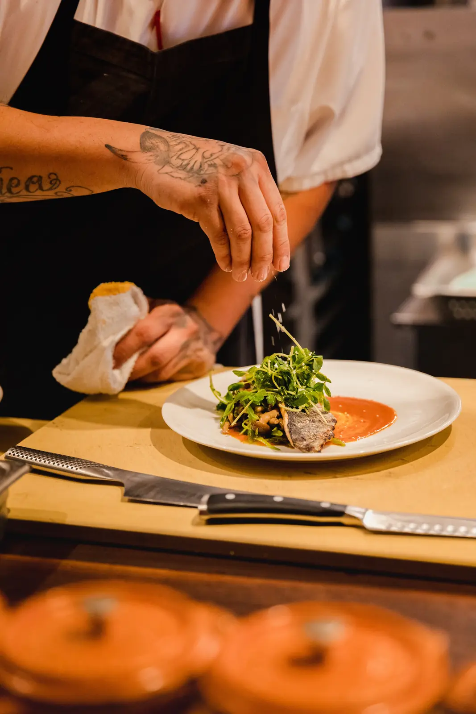
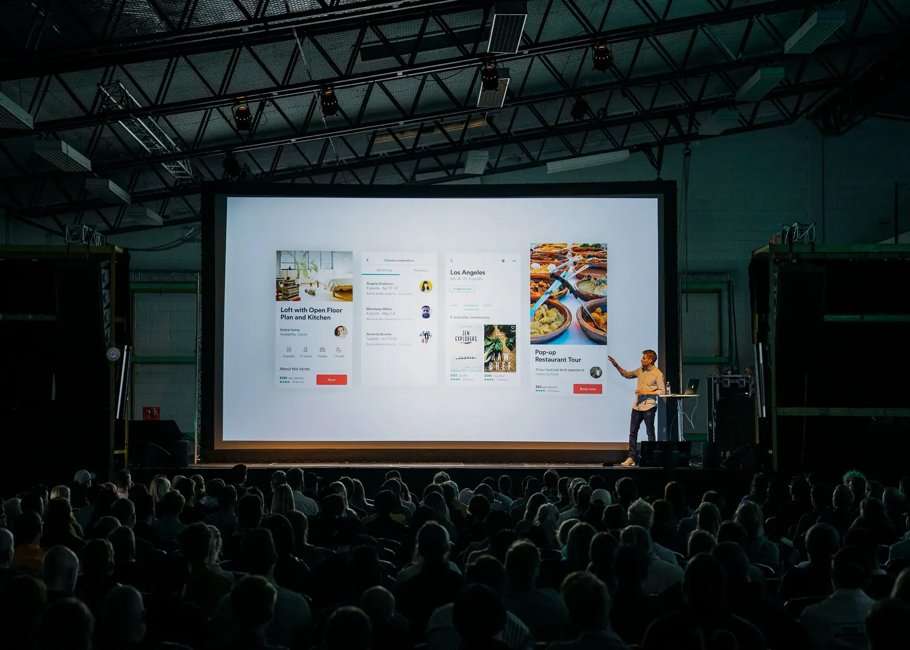
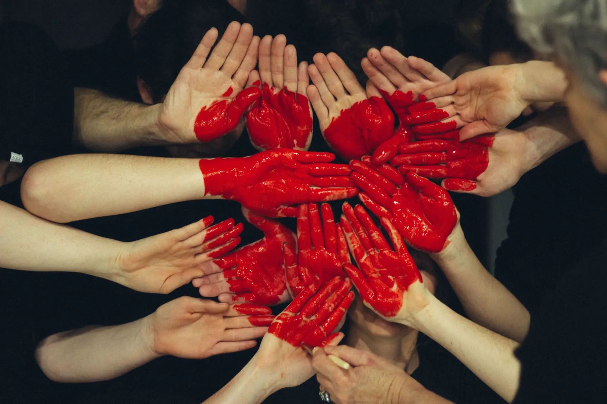
Onde nos encontrar
Cada casa junta dois ou três pratos locais. O resto do menu é igual em todo o lado, feito com o mesmo livro de receitas.
A cozinha
A chef Michelle Duvier gere o livro de receitas. Estes são os responsáveis de estação em Maputo.
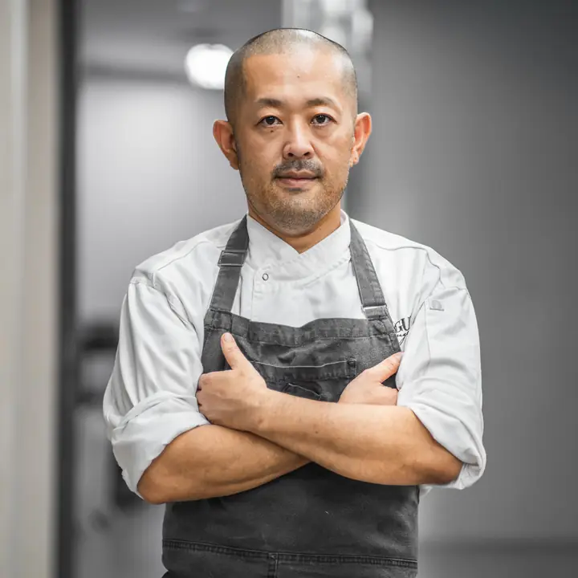
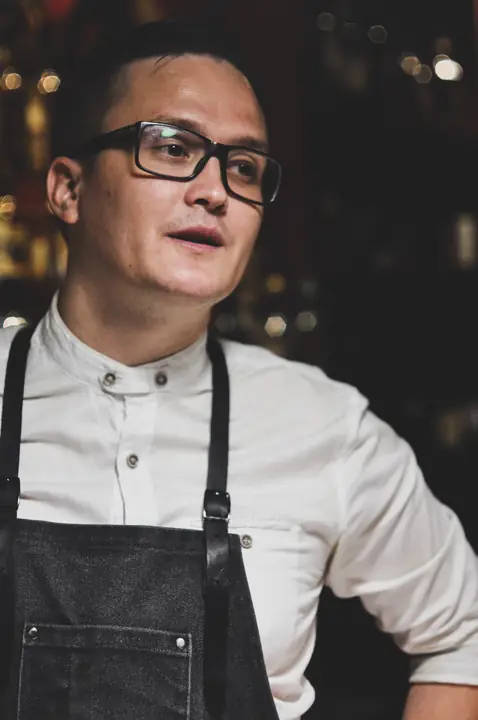
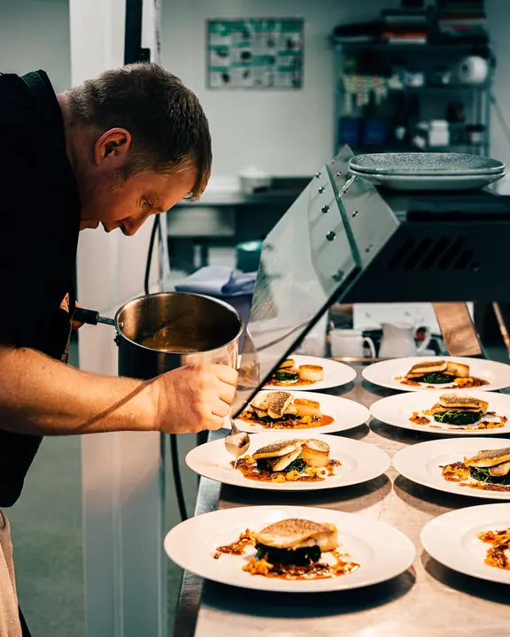
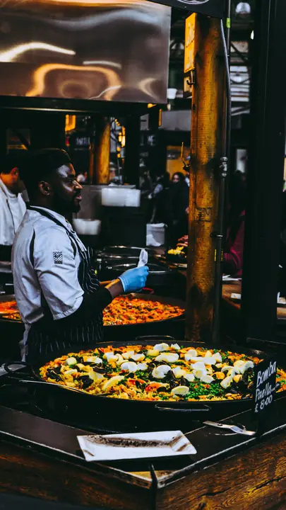
Também na linha: Camila Silva (pastelaria), Milena Belata (forno a lenha), Carlos Mirel (hambúrgueres), Ira Nuhai (sushi), Ykrag Munsof (fritadeira) e Michelle Duvier, chef.
Aquilo em que acreditamos
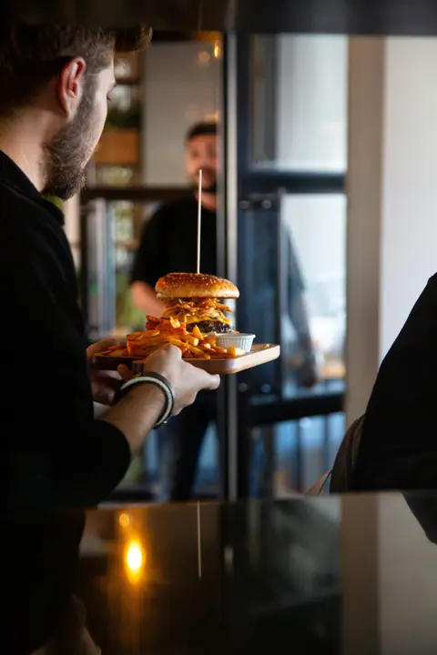
A comida sai quente ou volta para trás. Um prato espera no passe quatro minutos no máximo, e cada empregado prova os especiais antes do serviço.
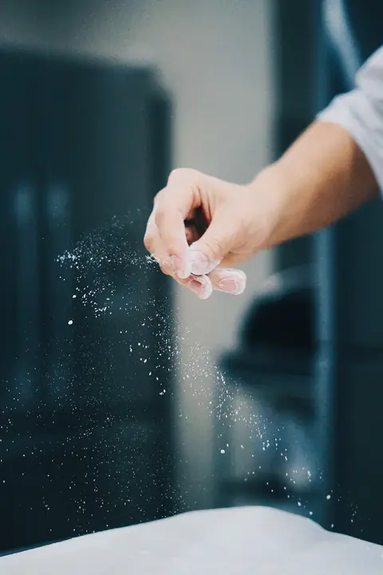
Cada casa junta pratos da sua cidade. Os melhores viajam: a paella, o ramen e o frango à Zambeziana começaram assim.
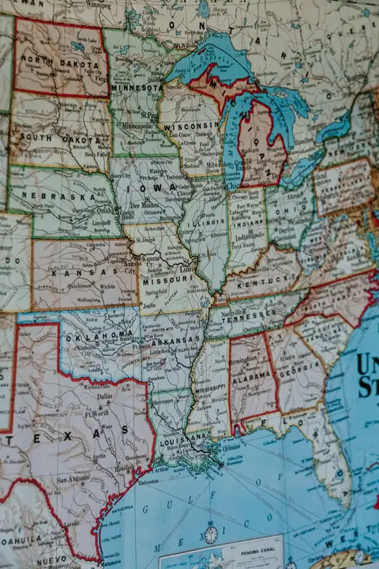
Abrimos uma casa de cada vez e só quando um chef de outra casa está pronto para a liderar. Sem franchisings.
Junte-se a nós
Contratamos cozinheiros, empregados e barmen em todas as casas. Quem está na lista da comunidade tem acesso antecipado a bilhetes e pratos novos.